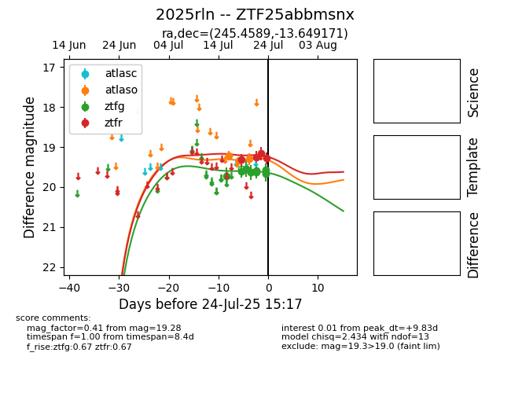

Target 2025rln at 2025-07-24 15:17, see:
FINK: fink-portal.org/2025rln
Lasair: lasair-ztf.lsst.ac.uk/objects/2025rln
ALeRCE: alerce.online/object/2025rln
TNS: wis-tns.org/object/2025rln
YSE: ziggy.ucolick.org/yse/transient_detail/2025rln
alt names
ZTF25abbmsnx (ztf,fink)
2025rln (tns,yse)
coordinates:
equatorial (ra, dec) = (245.4589,-13.64917)
galactic (l, b) = (1.1047,+24.68926)
photometry
last atlaso=19.30, ztfg=19.57, ztfr=19.28
3 atlaso, 10 ztfg, 4 ztfr detections
